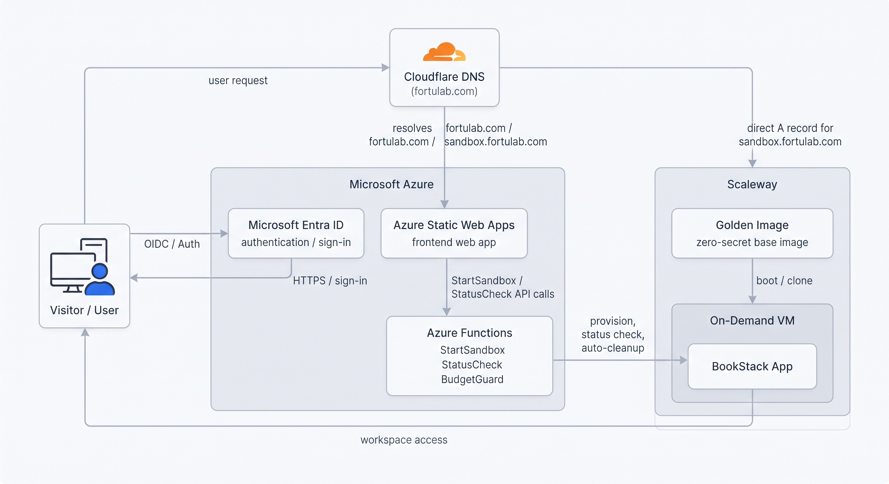

Budget Multi-Cloud Sandbox
A showcase project demonstrating a cost-effective multi-cloud architecture. Identity and access are managed by Microsoft Entra ID, while on-demand compute runs on Scaleway with automatic shutdown after 10 minutes to keep cloud costs near zero.
Sign in to access the control panel and start the sandbox.
Sign in with Entra IDSandbox Control Panel
Authentication verified. You can start the on-demand BookStack environment below.
BudgetGuard active: The instance is automatically terminated after 10 minutes.

To launch the sandbox, sign in using the guest account credentials provided to you. If you don't have credentials yet, feel free to request access via my LinkedIn profile. Once started, please note that the application can take up to a minute to boot and become reachable. All project documentation and development details can then be viewed in the Books section at sandbox.fortulab.com/books.